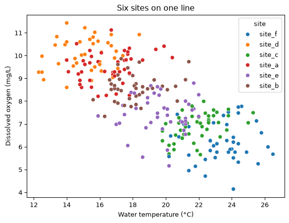
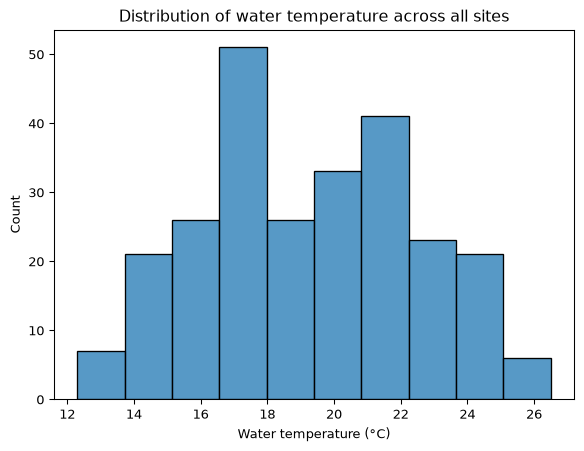
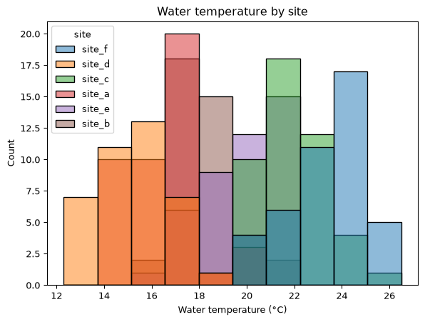
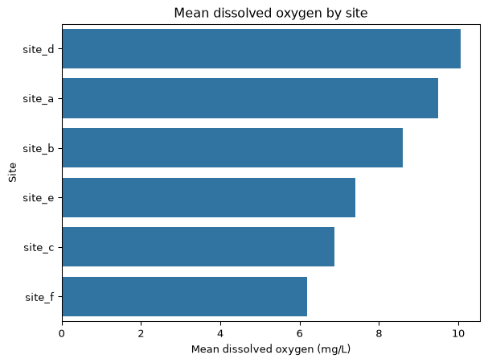
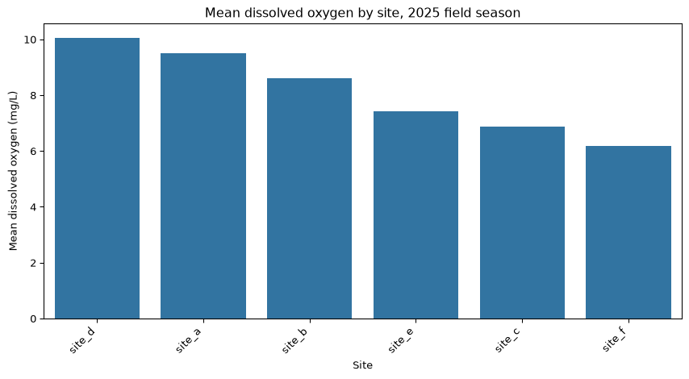

Everything you drew an hour ago, you drew by handing matplotlib two sequences of numbers and then describing, one command at a time, what you wanted done to them.
That works, and it is worth knowing, because underneath every Python figure you will ever make there is a matplotlib figure and a matplotlib axes. But it means that a plot of your data has nothing to do with your data. plt.scatter(wet_days['Daily_AirTemp_Mean_C'], wet_days['Daily_Precip_Total_mm']) does not know it is looking at a DataFrame, does not know what those columns are called, and cannot use anything else in the table.
seaborn takes the other approach. You give it the table and the names of the columns, and it works out the drawing. In exchange for that one change of framing you get, almost for free, the single most useful thing a figure can do: show you that your data is made of groups.
By the end of this session you will be able to:
write the three seaborn calls this course uses: sns.scatterplot, sns.histplot and sns.barplot
pass a whole table with data= and name the columns with x= and y=
split any of those three plots by a categorical column with hue=, and read the result
feed a grouped Series to sns.barplot using its .values and its .index
keep using every matplotlib command from the last session on a seaborn figure
Getting Started
Create a new notebook from the Command Palette (Create: New Jupyter Notebook), and confirm its kernel reads eds217_2026.
Save your notebook (Ctrl + S, or Cmd + S on macOS) as: Session_7B_Seaborn.ipynb
Add a title cell (Markdown), updating the date to today:
# Day 7: Session 7B - Name the Columns, Not the Colours[Session Webpage](https://eds-217-essential-python.github.io/course-materials/interactive-sessions/7b_seaborn.html)Date: 09/09/2026
Rebuild Friday’s clean stream-chemistry table. Every line below is one you have run before, in the Thursday colab and again in 5A:
sns.scatterplot(data=df, x='column_name', y='column_name')# ↑ ↑ ↑# the which column which column# table across up
Three differences, and the third is the one that matters.
data= takes the whole table, once.
x= and y= take column names as strings, not the columns themselves.
The axes came out labelled, because seaborn knew what the columns were called and matplotlib never did.
That last one is a small convenience and a large hint. seaborn is not a drawing library that happens to accept DataFrames. It is a library built on the assumption that your data is a tidy table, and it uses everything it knows about that table to make decisions you would otherwise make by hand.
Note
🐍 Column names are not automatically good axis labels. temperature_c is a variable name; Water temperature (°C) is a label. Everything from the last session still works, so override them whenever you would show the figure to somebody:
sns.scatterplot(data=survey, x='temperature_c', y='dissolved_oxygen_mg_L')plt.xlabel('Water temperature (°C)')plt.ylabel('Dissolved oxygen (mg/L)')
hue=, and what a table cannot show you
On Friday morning you computed two small tables from this file and read them side by side:
Two orderings of six sites, and one is the exact reverse of the other. You concluded, correctly, that the warm sites are the low-oxygen sites. You believed it because the two lists happened to line up.
Now add one argument to the scatter you already made:
Code
plt.figure(figsize=(7, 5))sns.scatterplot(data=survey, x='temperature_c', y='dissolved_oxygen_mg_L', hue='site')plt.xlabel('Water temperature (°C)')plt.ylabel('Dissolved oxygen (mg/L)')plt.title('Six sites on one line')plt.show()

hue= takes a column name and gives every distinct value in that column its own colour, with a legend built for free.
Read what came back. The six sites are not scattered through the cloud; they are laid out along it, in order, from site_d in the cool oxygen-rich corner to site_f in the warm oxygen-poor one, with site_a, site_b, site_e and site_c strung between them in exactly the order your two tables gave.
The tables told you six sites have six means. The figure tells you that all 255 samples, from all six sites, lie along one relationship, and that the sites differ because they sit at different places on it. That is a stronger claim and a different one, and no table you built this week could have made it.
hue= is the argument you came for
Almost every serious question in environmental data science is does this relationship differ between groups. Sites, species, seasons, treatments, oceans, decades.
hue= is how you ask it, and it works the same way on all three of the functions below. When you have a figure and a categorical column, try hue= before you try anything else.
✏️ Test your knowledge
Write a seaborn scatter plot of conductivity_uS_cm against dissolved_oxygen_mg_L, coloured by site, inside a figure eight inches by five. Label both axes with units and give it a title.
Then, in a markdown cell: do the sites separate as cleanly here as they did for temperature? Name one thing this figure tells you about the six streams that the temperature figure did not.
sns.histplot: the shape of one column
A scatter needs two variables. When you have one and want to know how its values are distributed, you want a histogram: the values sorted into bins, with a bar showing how many landed in each.
Code
plt.figure(figsize=(7, 5))sns.histplot(data=survey, x='temperature_c')plt.xlabel('Water temperature (°C)')plt.title('Distribution of water temperature across all sites')plt.show()

data= and x=, and no y=, because the height of each bar is a count that seaborn works out. This is the same picture plt.hist() drew for you behind a boxed note on Thursday evening, now with a name and an argument you can use.
And hue= works here too:
Code
plt.figure(figsize=(7, 5))sns.histplot(data=survey, x='temperature_c', hue='site')plt.xlabel('Water temperature (°C)')plt.title('Water temperature by site')plt.show()

One broad hump has become six narrow ones, mostly side by side. That is worth pausing on: the overall distribution looked like one population with a wide spread, and it is nothing of the sort. It is six streams, each fairly consistent, at six different temperatures.
A histogram of a column that mixes groups almost always looks wider and vaguer than any of the groups in it. Splitting by hue= is how you find out whether the width is variability or structure.
✏️ Test your knowledge
Draw a histogram of pH, then draw it again with hue='site'. Label the axes.
In a markdown cell, say whether pH separates the sites as sharply as temperature did, and what that means for the ph_class column you built on Thursday: is it labelling chemistry, or is it labelling which stream the bottle came from?
sns.barplot, and the Series idiom
A bar chart compares one number per category, which makes it the natural picture for the output of a .groupby(). seaborn will do the whole thing in one line if you let it:
Six bars, and you never called .groupby(). Given a categorical x= and a numeric y=, sns.barplot groups the table by x and draws the mean of y for each group.
That convenience comes with two things you did not ask for.
The little black line on each bar is a measure of how uncertain that mean is, computed by resampling the data hundreds of times. It is a reasonable thing to want and this course has not taught you what it means, which is a poor reason to have it in your figure.
And the bars are in whatever order the sites appear in the file, which is no order at all.
The alternative is to compute the number yourself, with Friday’s sentence, and hand seaborn the answer:
That is a Series: six values, indexed by site name. A Series carries its numbers in .values and its labels in .index, and those are exactly the two things a bar chart needs.
Code
plt.figure(figsize=(7, 5))sns.barplot(x=mean_do.values, y=mean_do.index)plt.xlabel('Mean dissolved oxygen (mg/L)')plt.ylabel('Site')plt.title('Mean dissolved oxygen by site')plt.show()

sns.barplot(x=series.values, y=series.index) # horizontal bars, sorted as you sorted themsns.barplot(y=series.values, x=series.index) # vertical bars, same data
Learn this as one unit. It is the pattern that connects the six days of table-shaping you have just done to the pictures you make of the results, and you will type it constantly:
group, aggregate, sort, then plot the .values against the .index.
Three things came out of doing it the long way. The bars are in the order you sorted them, so the figure ranks the sites. There is no uncertainty interval, because you drew a mean and only a mean. And putting the values on x= and the labels on y= makes the bars horizontal, which means the site labels read left to right instead of needing rotation. With longer labels, that last one stops being cosmetic.
Note
🐍 Note what this cell did not need. No data=, because there is no table: a Series is not a DataFrame, and .values and .index are two plain sequences. This is the one place in seaborn where you go back to handing over raw numbers, and it is worth knowing that the option exists.
✏️ Test your knowledge
Build a Series of mean conductivity_uS_cm by site, sorted from highest to lowest, and draw it as horizontal bars using the .values and .index idiom. Label both axes with units, give the figure a title, and end the cell with plt.tight_layout().
Then compare it with the dissolved-oxygen ranking above. Do the two orderings agree, disagree, or neither? Answer in one sentence with the site names in it.
seaborn draws on matplotlib
Every seaborn call in this session sat inside a plt.figure() and was followed by plt.xlabel() and friends, and all of it worked. That is not a coincidence and it is not seaborn being polite.
seaborn draws onto a matplotlib axes. If none exists it makes one, exactly the way plt.plot() does. So the whole of the last session applies unchanged:
Code
plt.figure(figsize=(9, 5))sns.barplot(x=mean_do.index, y=mean_do.values)plt.xlabel('Site')plt.ylabel('Mean dissolved oxygen (mg/L)')plt.title('Mean dissolved oxygen by site, 2025 field season')plt.xticks(rotation=45, ha='right')plt.tight_layout()plt.show()

figsize, labels, title, rotation, tight_layout. Same commands, different drawing call in the middle.
This is the division of labour worth remembering: seaborn decides what the marks are and where they go; matplotlib owns the frame around them. When you want to change something about the data, change a seaborn argument. When you want to change something about the figure, reach for plt.
Note
🐍 seaborn has far more than three functions, and a sns.set_theme() call that restyles every figure in your notebook at once. Explore both when you have time. Three functions and hue= will carry you through this course and most of a first job, and they are worth knowing cold before you collect any more.
Key points
The seaborn call shape is sns.function(data=df, x='col', y='col'). The table goes in whole and the columns are named as strings.
hue='col' splits any of these plots by a categorical column and builds the legend for you. It is the argument that makes seaborn worth learning.
sns.scatterplot for one measurement against another.
sns.histplot(data=, x=) for the distribution of a single column. No y=; the heights are counts.
sns.barplot(data=, x='category', y='value')silently computes a mean and draws an uncertainty interval you did not ask for.
Prefer the explicit route: .groupby(), aggregate, .sort_values(), then sns.barplot(x=series.values, y=series.index). You control the number and the order.
seaborn draws on matplotlib, so plt.figure(figsize=), plt.xlabel(), plt.title(), plt.xticks(rotation=) and plt.tight_layout() all still work.
A distribution that mixes groups looks wider than any group in it. Split it before you describe it.